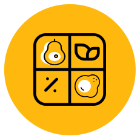
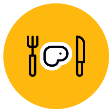
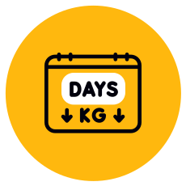
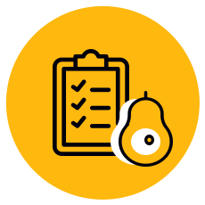
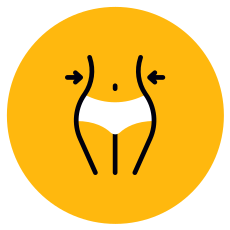

Про мене
В професії коуча з харчування моя головна мета - сприяти покращенню здоров'я та добробуту моїх клієнтів. Я прагну надавати персоналізовані послуги та індивідуальний підхід кожній людині, щоб допомогти досягти їх мети та покращити стан здоров'я.
Мої поради базуються на найновіших дослідженнях у галузі харчування та медицини, а також на моєму власному досвіді та експертності. Я допомагаю клієнтам зрозуміти важливість правильного харчування для здоров’я та довголіття, а також навчаю їх здоровим звичкам і стратегіям для досягнення бажаних результатів.
Мої досягнення
- 300+
- Клієнтів
- 1500
- Спалених кілограмів
- 10000+
- Соцмережі
Чому обирають мене?
Якісний супровід та консультації, а також ефективні результати клієнтів.
- Досвід
- Персоналізований підхід
- Супровід та підтримка 24/7
- Широкий спектр послуг
- Науково обґрунтований підхід
- Результати клієнтів
Сертифікати
Моє навчання як коуча з харчування відбувається у провідних лікарів, дієтологів та нутріціологів. Де я здобуваю знання про харчування та його вплив на здоров'я. Отримавши нові сертифікати, я прагну одразу впроваджувати свої знання та досвід для підтримки здорового способу життя моїх клієнтів.
Послуги
У моїй практиці я ставлю на персоналізований підхід до кожного клієнта, враховуючи їхні індивідуальні потреби, цілі та обмеження.
-

Меню-конструктор
-

Індивідуальне меню
-

Індивідуальний супровід
-

Консультація
-

Курс «Здорове кето 2.0»
Тарифи і ціни
Також я можу розглянути бажання клієнта та сформувати індивідуальний пакет послуг, який відповідає його очікуванням та бюджету.
- 1. Меню-конструктор:
- Збалансоване меню з розрахунком КБЖВ за стандартним кето
- Меню, яке звільнить вас від щоденного підрахунку
- Меню, що слугує місяцями і гарантує різноманітність
- Вказано час приготування кожної страви
- 40+ різних страв для збалансованого харчування
- Рецепти кето-випічки та кето-десертів також з КБЖВ
- Два варіанти калорійності для кожної страви
- Меню - 500 грн
- Меню+розрахунок КБЖВ - 600 грн
- Замовити
- 2. Індивідуальне меню:
- Ретельно розроблена програма харчування з урахуванням вашого стану здоров’я
- Індивідуальний підхід до ваших харчових потреб
- Програма харчування, яка враховує алергії
- Урахування ваших уподобань в їжі
- Харчування, яке відповідає вашому життєвому стилю
- Найотимальніше харчування, яке підійде саме вам
- Програма харчування, що враховує ваші особисті потреби
- Меню на 1 тиждень - 350 грн
- Меню на 2 тижні - 600 грн
- Замовити
- 3. Індивідуальний супровід:
- Персоналізований підхід до досягнення ваших цілей
- Індивідуальні поради протягом всього супроводу
- Стеження за вашим прогресом і адаптація планів харчування
- Допомога у подоланні будь-яких перешкод на шляху до вашої мети
- Індивідуальний підбір електролітів та вітамінів
- Індивідуальне меню, що відповідає вашим потребам
- Адаптація планів харчування відповідно до змін у вашому житті
- Супровід 2 тижні - 1500 грн
- Супровід 4 тижні - 2500 грн
- Замовити
- 4. Консультація:
- Можливість отримати індивідуальні поради щодо низьковуглеводного харчування
- Обговорення ваших харчових звичок, цілей та потреб під час консультації
- Відповіді на хвилюючі вас питання про харчування
- Розробка персоналізованого плану дій для досягнення ваших цілей
- Консультація з фокусом на ваші харчові потреби
- Підбір електролітів та вітамінів, що враховують ваші особисті потреби
- Тривалість консультації - 1 година
- Ціна - 600 грн
- Замовити
- 5. Курс «Здорове кето 2.0»:
- Навчитесь розраховувати самостійно своє КБЖВ
- Навчитеся складати свою низьковуглеводну тарілку
- Обрати здорові продукти в магазині
- Здобудете корисні звички для свого здоров'я
- Отримаєте підбір електролітів та меню-конструктор
- Бібліотека книг з харчування та три прямих ефіри зі мною
- Рекомендації на документальні фільми з харчування
- Тривалість курсу 3 тижні. Формати надання інформації: відео, аудіо, PDF
- Ціна участі - 699 грн
- Замовити
Як я працюю
- Обговорення запиту клієнта та встановлення цілей
- Отримання інформації від клієнта та попередній аналіз харчування
- Розробка індивідуалізованого плану харчування
- Супровід і підтримка в процесі змін харчування, моніторинг прогресу
- Оцінка результату, за потреби визначення наступних кроків
Часті питання
Так, кето дієта часто сприяє втраті зайвої ваги, оскільки зменшує споживання вуглеводів та спонукає організм використовувати жири як джерело енергії.
В основному, це продукти з високим вмістом жирів та низьким вмістом вуглеводів, такі як м'ясо, риба, яйця, масла та низьковуглеводні овочі.
Так, але краще обирати низьковуглеводні фрукти, такі як ягоди або авокадо, та обмежити їхнє споживання через вміст природних цукрів.
Деякі види алкоголю, такі як сухе вино або спиртні напої без цукру, можна вживати у помірних кількостях, проте краще обмежити їхнє споживання.
Період адаптації може тривати від кількох днів до кількох тижнів, проте більшість людей помічають полегшення вже протягом перших кількох днів.
Багато людей помічають збільшення енергії та полегшення відчуття ситості на кето дієті, особливо після періоду адаптації.
Відгуки
Ольга
Дівчата, пишу цей відгук для тих, хто ще вагається або тільки починає свій шлях на кето) Сорі, буде лонгрід, але, сподіваюся, це вам допоже. І допоможе одразу розпочати правильно, з Анічкою) Бо не зважаючи на те, що в мене вже був досвід схуднення на кето і певні знання, на супроводі з Анею - це набагато легше, смачніше і ефективніше! Аню я знайшла випадково в тік-ток, коли вже придбала супровід у більш популярного кето-коуча. Але прям відчула, що це «моя людина» і не прогадала. Попросила там відкласти початок (спойлер🙄 з ними потім я пропрацювала один-два дні, бо це небо і земля, в порівнянні🤌, забила на гроші і продовжила з Анею. Доречі, там ніхто навіть жодного разу не написав, типу, де я ділася, як я, чому нема питань🤷♀️) Анічка ж працює з повною відданістю і переживанням. Складає чудове меню, враховуючи побажання. Завжди цікавиться як справи, підкаже будь-яке питання (звісно, якщо ми про індивідуальний супровід). Професійно пережила всі мої ПМС і плато (а я тоді 👿💩🫣). І головне - це підтримка і мотивація! Тому від щирого серця рекомендую Аню, і як кето-коуча з індивідуальним супроводом, і впевнена, її марафон буде зе бест оф зе бест🙌
Руслана
Привіт, хотіла б написати відгук про нашу співпрацю з тобою 🌷 Я безмежно вдячна тобі за підтримку, за розуміння, за те, що ти завжди цікавилась тим як я почуваю себе. Насправді це дуже важливо було для мене, особливо тоді коли я тільки розпочала КЕТО харчування з тобою. Я вдячна тобі за те, що коли було моє день народження і я трішки дала слабинку з КЕТО харчуванням, ти віднеслася до мене з розумінням і підтримала мене, завдяки тобі я не зірвалась, а з новими силами, взяла себе в руки і йшла далі… За меню тобі окреме дякую, все смачно😇 На сьогоднішній день, я вже 12 тижнів як на КЕТО харчуванні, не пожаліла ні хвилини, що я вирішила привести себе і своє здоров’я таким методом. Почуваю себе добре, жіночі дні йдуть добре. За 12 тижнів я скинула 15 кілограм. Я більше ніж задоволена 😇❤️ Мені всі мої знайомі, говорять, що я гарно виглядаю, і для мене це справді дуже цінно🦋
Вікторія
Анюта дякую тобі за такі чудові 4 тижні. Я ніколи не могла подумати що я зможу так скинути свою вагу, та привести своє тіло до такого результату. В талії в мене пішло 10см. В ляшках 14🤩 це будо дуже смачне похудіння. І найголовніше на вагах я побачила 59.9🥳🥳🥳🥳 Я багато чого дізналась для себе, і головне що солодке можно заміняти😂 тому що коли я написала тебе це було головне від чого я не могла відмовитись. Всі ці булочки, перекуси, фаст-фуд вони блін не потрібні, але раніше я не могла жити без цього😂🥲 Ти таке сонечко, підтримувала мене, і ця підтримка те що мені було потрібно. Я буду тебе рекомендувати просто всім🥺тому що ти просто найкраща!!!!❤️❤️❤️ ой зараз заплачу😥
Маргарита
Всім привіт ♥️, я не була активною, бо придбала марафон виключно за ради меню, але коментар свій мушу написати! Меню і правда супер, це не перший мій марафон, але за меню 💯 балів, навіть більше, я дуже добре на ньому худну, і правда я думала, що вже можна ще придумати, але ж рецепти були для мене нові! Дякую велике Аня, Ви молодчинка, інформації дуже багато, було видно, що Ви працювали над тим, щоб ми все зрозуміли! Я бажаю всім бути гарними і здоровими! Я Вас Аня рекомендую, тім хто хоче спробувати кето, для мене ви найкраща і Ваше меню теж, всім успіхів, а Україні перемоги 💛💙❤️
Ольга
Анічка, привіт) Нарешті я знайшла час подякувати тобі🥰 Завдяки нашій роботі, за менш ніж 3 місяці, я відчуваю себе іншою людиною) Дякую тобі за підтримку і мотивацію❤️ Зараз іду у вільне плавання (але сподіваюсь, для мене завжди знайдеться місце, якшо шо🤭). Бажаю тобі успіхів, бо ти чудова людина і класний кето-коуч. І написала відгук для твоїх дівчат, щоб якщо мають якісь сумніви - відкидали і починали ВЖЕ, або продовжували, не опускали руки, коли вага стає! Навіть фотку даю свою ДО/ПІСЛЯ😂 (26.03/7.07) 74,6кг-64,9 (- 9,7кг🙌)
Леся
Доброго вечора! По результатах за 2 неділі: по -2 см зі стегон, талії та ноги. Не важилась, бо для мене суттєві об'єми, а не вага. Хочу висловити подяку Ані за марафон, за поступове та впевнене введення нас у світ Кето. Дуже сподобалось подання матеріалу: чітко, досить доступно, грамотно. Можна сказати 24/7 Аня була з нами, підтримка, відповіді на питання, мотівація, підсказки, турбота. Аня вболіває за кожного учасника проекту. До речі, видно, що Анічка добре розуміється на цій темі і гарно доносить її учасникам марафону, від простого до складного. За 2 неділі ми отримали купу безцінної інформації. А головне, що навчились самі складати свої тарілочки! Запропоноване меню - це бомба: смачно, швидко та корисно! Так і марафон допоміг мені отримати відповіді, я зрозуміла свої помилки! Анічка, щиро дякую за приємно з користю проведений час з вами, а також усім дівчаткам бажаю успіхів та досягнень мети! З задоволенням приєднаюсь до наступних проектів.
Ганна
Доброго дня! Хочу виразити вдячність та шану Ганні за такий класний курс та чудову подачу інформації. З першого дня відчувалось з якою відповідальність та старанністю було складено курс 👌👌 Хоча я не викладала свої звіти, але харчувалася за меню, дні повторювала, зазначила свої улюблені страви та які найшвидше було приготувати. Опанувала додаток підрахунку калорій. Інформацію з курсу поступово вивчаю. Розумію, що курс навчальний і його мета навчити нас самостійному кето-харчуванню, але я б радістю прийняла участь у підтримуючиму марафоні, де була б змога отримувати мотивацію та можливість знаходитись серед однодумців. Якщо буде повторення курсу чи його продовження, то запрошуйте і мене, з радість буду учасницею 😉😉
Наталія
Дівчата, дякую за два прекрасні тижні спілкування🥦🫒 Ми всі круті, і нехай кожна з нас матиме здорове тіло й фігуру своєї мрії🔥 Анічко, дуже дякую за навчальний формат марафону і смачні рецепти 🥑 Ви не тільки красива, а й справжній професіонал своєї справи, котрий захоплює, мотивує і мʼяко спонукає правильно харчуватись👏 а Ваші рецепти, то просто бомба🥰 саме з Вами зрозуміла, що кето-харчування можна адаптувати у щоденне життя. Далі - зрозуміти як і зробити це, тож спробую самостійно кето-харчуватись, якщо буде складно, знову до Вас🥦🥬🥒 приємним бонусом за ці два тижні стало -1,9 кг. Хоча було й сухе вино, й зайві вуглеводи.
Аліна
Доброго ранку красуні, так сумно що наш марафон підійшов до завершення 😌 Анічка дуже вам дякую за корисну інформацію ❤️ Усім нам бажаю успіхів в схудненні, щоб кето харчування стало для нас частиною нашого життя 😊
Наталія
Дівчата, красуні, всіх вітаю з закінченням марафону! Ми разом пройшли цей цікавий та захопливий шлях! Навіть жаль, що час так швидко пролетів… Я буду дуже сумувати за нашим спілкуванням і за чарівною атмосферою марафону! 😭 Анічка, я безмежно вдячна тобі за такий неймовірний досвід, за твій зворотній зв’язок 24/7! Не одне питання не залишилось без відповіді! 🥰 Інформації було багато, яка так просто і доступно викладена! 👍 Величезне дякую за доступ до чату ще на 2,5 місяці! У кожної з нас є така прекрасна можливість - прослухати і переглянути весь матеріал ще не раз та використовувати його для досягнення своїх цілей! Всім бажаю подальшого розвитку та успіху! Аня, я дуже вдячна тобі за твій досвід, допомогу та підтримку! 👍😘❤️
Світлана
Аню, дякую вам за марафон. Він був надзвичайно інформаційним і корисним. Інформація подавалась стисло і дозовано, давався час на самостійну проробку і осмислення кожної теми. На різні запитання завжди була швидка і конструктивна відповідь. Особливе дякую за книги і фільми, рекомендовані для прочитання і перегляду. Ви дуже розумна і відповідальна, з вами легко і приємно спілкуватись. Бажаю вам успіхів на шляху кето в ролі коуча. Бажаю успіхів усім, хто вам довірив і довірить в майбутньому свій шлях до стрункості і здоров'я з КЕТО. Ви професійне і надійне плече! Триматиму вас в курсі своїх досягнень, знань у меня вдосталь, головне тепер, діяти! З великою повагою, Світлана.
Лариса
На кето я вже давненько, на початку була на декількох марафонах. То все було сухе дуже строге меню, ні крок вліво, ні крок вправо, як то кажуть. Знань, та інформації давалося по мінімуму, тяжкувато було без пояснень. На вашому ж марафоні додатково отримала потрібні знання, та багато цікавої інформації. Дякую. А для себе прийняла рішення, що кето, це тепер мій стиль життя. Мені дуже подобається. Можливо колись ще з вами зустрінемося.
Світлана
Привіт 😊 Хочу поділитися з вами своїм результатом, якого без Ані я б точно не досягла😊 З кето я вже була знайома, але довше місяця не витримувала, тому що їсти тільки яйця і м'ясо просто не було ні сил, ні нервів😁 Потім мені в тік-ток почали з'являтися відео Ані і я вирішила спробувати 😊 Записалась до неї на індивідуальний супровід, а потім одразу і на марафон☺️ І ось за чотири тижні у мене -11 кг🥰🥰🥰 А саме головне, що завдяки меню, над яким трудилась Аня, мені не хочеться "зірватися". Нещодавно спіймала себе на думці, чи хотіла б я кебаб чи щось з маку і зрозуміла, що ні😁 Мені просто цього не хочеться ☺️☺️☺️ А це вже не мале досягнення, тому що ще місяць назад я кілька разів на тиждень замовляла фаст-фуд 😈 Тому дівчата, все у вас вийде!!!! Аня, а тобі я ще раз дякую за твою постійну підтримку, за те, що весь час була на зв'язку ☺️ За твої знання, якими ти поділилася з нами і за твої старання в створенні цього марафону🥰🥰🥰🥰
Наталія
Мені теж подобається марафон🥰🥰🥰 Анічка щиро дякую за вашу турботу і дуже цікава і корисна інформація і смачне і просте меню🙏🙏🙏
Яна
Хочу щиро подякувати Ані за чудові і смачні рецепти. За за маленький, але такий теплий у спілкуванні чат. За підтримку. За таку велику інформацію яку Ви надали для нас, це дуже велика пророблена праця (я вперше таке зустрічаю). Дякую Вам.
Любов
Аня, дякую Вам за знання ❤️, що ви з нами поділились. Мені дуже сподобалось, що можна і слухати і самостійно читати, все чітко, ясно і без лишньої "води" в викладенній інформації. Цікава література, фільми. Величезне дякую. 💐
Анна
Анічка, ви велика молодець ☺️ Дуже вдячна вам за ту велику кількість корисної інформації, яку ви надали. Ви надали багато рекомендацій, яких я буду дотримуватися. Дуже рада, що Тік Ток підсунув мені відео з смачним рецептом від вас. Завдяки вам, моє кето-харчування стало більш правильним ☺️ Чому я рада 🤗 Бажаю всім успіхів у досягненні цілей.
Олена
Я хочу поблагодарить, Анечка, вас за этот марафон. Я узнала много интересного и нового! Я из-за работы начала немного позже, чем все, но все возникающие у меня вопросы девчонки уже задавали и у меня сразу же были ответы!!! По килограммам потеряла пока только один, но в объеме уменьшилась уже заметно. Очень довольна, что попала на этот марафон!!! Спасибо огромное!!! Всем удачи в достижении поставленных целей!!!
Марина
Я дуже люблю марафони, була на різних, але Ваш ставлю в топ🔥🔥🔥 Я давно хотіла спробувати кето, але вагалась, тому прийшла до вас і дуже задоволена. Ви дуже професійно відкрили для мене це харчування, все інформативно та доступно пояснили, меню дуже смачне, зберігаю та буду готувати. Дуже шкода що марафон так швидко скінчився. По результатам я дуже задоволена, дуже великих я не чекала, тому що мені і не треба, моя вага була 58 зараз 55,500, обʼєми теж почали уходити, візуально я вже це бачу, самопочуття класне, є легкість та більше енергії. Дякую Вам велике🌸🌸🌸🌸🌸🌸
Галина
Аня, я дуже вдячна, що потрапила до Вас. Я вже була на кето, але завдяки Вам я підкорегувала свій раціон. Зрозуміла чому в мене стоїть вага. Чому бувають зриви, я переїдала. За дні марафону, мені жодного разу не хотілося більше зїсти, ніж запланувала. Я пробую складати собі раціон, так як мені подобається і з тими продуктами які є в холодильнику, і при цьому з дотриманням бжв. Сподобались Ваші рецепти, вони прості та смачні. Були важливі відповіді на мої питання, які ви давали. ❤️Вага за цей період здвинулась на 1 кг, хоч 2 місяці було плато. Сподобалась добірка книжок. Цей марафон був дуже корисний для мене. Іду з вдячністю та задоволенням❤️❤️❤️.
Ілона
Дякую за можливість взяти участь у марафоні. Отримала багато корисної інформації про кето-харчування, яка допомагає мені розуміти процес і триматися плану. Нові знання вже використовую💥 Формат марафону сподобався, це було цікаво та пізнавально.😁❤️🥰
Тетяна
Доброго дня. Дякую всім дівчатам за чудову компанію на марафоні👍🏻👌Всім щиро бажаю омріяного результату. Велика подяка Ані за марафон і дуже смачне меню👌👌👌Багато корисної і цікавої інформації,багато порад,яких стала дотримуватись . Нажаль я не подолала додаток,немає зараз часу,але я його подолаю. Тому,Аня,якщо в Вас можна буде придбати ще інше меню,я б залюбки
Катерина
Доброе утро, у меня за две недели -4,800. Большое спасибо Ане за такое чудесное питание, с которым не голодна и лишние килограммы уходят)) Буду продолжать 💪🏼
Ганна
Доброго дня ❤️ Всім гарного дня та чудового настрою 🤗 Хочу подякувати Ані 🌺 Дуже дякую Вам ✨ за вашу працю ☺️ Інформація подана дуже класно , все зрозуміло, коротко і ясно 👌 Окремо дякую за рекомендаційні фільми та книги 🙃😊☺️❤️
Оксана
Аня, добрий вечір. Дякую Вам за якісний контент, подачу та послідовність наданої інформації, яка викладена на вищому рівні. Що стосується відео матеріалу та підбору книг і наукових досліджень за це окрема подяка. Ви практик котрий пройшов по крокам кожний рівень і корегував помилки на собі. Це дуже надихає працювати над собою та поважати своє тіло та здоровʼя. Ви надали нам можливість з мінімальними помилками обійти збільшення ваги та залежність від їжі та солодкого. Моя вага знизилась трохи, обʼєми зменшились суттєво. Абсолютно новий погляд на їжу та її якість. Я б хотіла зайти до вас на наступний марафон.
Олександра
Доброго ранку🤗 Хочу подякувати @annaketocoach за цей марафон! Ви вклали сюди частину своєї душі, ви поділились з нами своїм досвідом, поділились з нами інформацією якою ні хто ніколи не ділиться, відповіли на всі наші запитання! Відразу видно що для вас не головне гроші, для вас важливо довести людей до результату! Я безмежно вдячна вам за смачне та різноманітне харчування, за інформацію яку ви донесли до нас, щоб ми спокійно могли харчуватись самостійно далі! Ви добра , відкрита, щира та позитивна людина, я дуже щаслива що на просторах Тік-току я наткнулась на ваш рецепт з київським тортиком, та завдяки ньому потрапила на вашу сторінку і потрапила до вашого марафону! Я отримала дуже багато відповідей на свої запитання, в голові все стало на свої місця. Я нарешті відчула що таке кетоз, я не залежу тепер від їжі, за ці два тижні я втратила 9,1 кг 😱 я не знаю як це сталось, але для бажаної цифри на вагах залишилось ще трошки! Анічка, якби в мене була така можливість, я би вас розцілувала і обійняла 🥹🤗😘 Окреме дякую дівчатам за атмосферу в чаті, ви круті🥰!Сумно що час так швидко пройшов, але я рада що познайомилась з вами❤️!
Світлана
Аня, дякую тобі за марафон, особливо за його формат! Для мене було дуже важливо навчитись самій складати свій раціон з тих продуктів, з яких хочу. Ти допомогла мені відкоректувати свої тарілки, допомогла з електролітами, тому другий захід на кето був в рази легший і мої тренування не були важкими, крім одного дня, а тоді я прислухалась до тебе і пропустила тренування і правильно зробила, дикої втоми не було. Прислухалась до тебе і збільшила свій калораж і нічого страшного не сталося, а навпаки - вага рухається вниз, об'єми зменшуються. За дві неділі -3 кг, і в талії - 3 см. Одну книгу з рекомендованих почала читати, читатиму і решту.
Надія
Дякую за знання! Я зрозуміла, що я робила не так до цього. Жаліла гроші на марафон, а ваш доступний і ефективний. Дякую 🙏
Людмила
Доброго дня 🤗 Дякую за чудовий марафон та підтримку! Я отримала купу корисної інформації. Це супер! 🥰❤️
Зоряна
Доброго ранку 🌼☀️! Хочу всім подякувати за це неймовірно-приємне відчуття спільного руху, за такі красиві і надихаючі фото, за ваші цікаві питання і те, що ділились власними успіхами і промахами; за те, що продовжували рух… Дякую Hanna Demchenko @annaketocoach за Ваш Марафон, а особливо за те, яким саме він був 🥹. Я дуже приємно вражена… За період марафону я схудла на 2,5 кг і це при тому, що за цей період відсвяткували День народження донечки, два рази були в кафе і кілька днів вже складала меню самостійно! Зазвичай при таких умовах-було б 100% збільшення ваги, але не цього разу 🥹💪😊! Допомогло дуже смачне, різноманітне і збалансоване меню (з можливістю підбирати заміну продуктів за бажання), наявність рецептів і відео-пояснень з приготування різноманітних десертів і випічки, відео-фільми, книжки, пояснення, поради, рекомендації і все це було подане в дуже приємній для мене формі. Ще й весь час готові були відповісти на всі питання, підбадьорювали! Мені було дуже морально комфортно в нашій компанії та ще й я кожен день їла смачно і наїдалась! Буду сумувати за цією атмосферою спільного руху. Наважусь, мабуть, викласти частину фото. Не робила цього в процесі і вдячна, що не тисли з необхідністю викладати. І дякую всім, хто викладав! Ви були прикладом для мене 🥹🥰. Бажаю всім чудового продовження чудового процесу! Дякую 🙏🌱💪🌼🫶☀️.
Ольга
Анічка, дякую вам! Мені дуже сподобався формат "навчального" марафона, було багато інформації, ні якої "обязаловки", "муштри", залякування. Все було приємно і корисно. Кожен працював в своєму темпі. Дякую за зворотній зв'язок, влучні поради. Бажаю вам і всім марафонцям скорішого миру, перемоги над ворогом і над зайвою вагою! Завдячуючи вам, останне тепер буде більш зрозумілим і сприятливим! Всім здоров'я і удачі! Цьом!💝💝💝
Оксана
Девочки здравствуйте. Как хорошо что все ещё тут. Я ещё в больнице . Буду рада продолжать худеть с вами. Отдельно хочу написать Анне. Анна я очень благодарна за участие в твоём марафоне . Это грандиозная поддержка . Спасибо тебе за то что отвечала на все вопросы и была с нами . Спасибо за терпение и твой труд. Я похудела с 85 до 81. Это конечно не много но я продолжаю . Надеюсь что мы будем с девочками и дальше вместе. Мы справимся.🥰
Ганна
Дорогая Анна и девчонки, спасибо большое за приятное время провождение и поддержку!!! Дорогая Анютка, благодарю 🙏 за прекрасный марафон, за замечательные лекции и кучу новой информации!!! С вами я стала по-другому воспринимать еду и кето!!!! Мой результат -1,7 кг за 2 недели и - 2 см со всех объёмов, а на животике -3 см, что очень порадовало))) Буду всячески придерживаться и не останавливаться на этом! Всем успехов, удачи и терпения!!!!! Держитесь, мы справимся!!! 👍😘😽🌞
Юлія
Доброго вечора) Хочу подякувати @annaketocoach за якісне супроводження та інформацію в марафоні. Знайшла Аню в ТікТоку і одразу вона викликала довіру, тому я приєдналася до марафону) Мої результати: вагів у мене не має. Напишу обʼєми за два тижні: Талія -3 см, Стегна -1 см, Живіт -2 см. На цьому я не хочу зупинятися, тому йду далі) Тим паче меню дуже смачне) 🤗
Каріна
Дякую Вам за цінні знання та навички! Раніше в мене були невдалі спроби сидіти на пп та кето, але це були тортури якісь, безкінечний голод та зриви. Дякуючи Ані я навчилась складати збалансоване меню на день, притримуватися БЖУ, та дійсно смачно харчуватися, без голоду головне, та без тяги до солодкого без якого раніше не могла жити. Ваше меню це знахідка! За період марафону мене покинуло 7 кг 😍😍😍 знаю що там було багацько водички, але …7 кг за 2 тижні харчуючись смачно та вдоволь! Я безмежно вдячна Вам !!!!
Надія
Доброго дня. Для мене цей марафон був, джерелом корисної інформації. Нажаль я заболіла під час проходження. Тому не притримувалася четкого БЖВ. Дякую за старання та увагу)
Тетяна
Дуже дякую! На кето вже 1.5 року. Боремося не тільки з зайвою вагою, але і з інсулінорезістентностью. За цей час -22 кг. За два тижні на марафоні -2 кг. Дуже гарний результат. Побачила свої помилки.
Катерина
Спасибо большое, Аня, за полезную информацию, за вкусное меню, а также за то, что вы всегда все подробно объясните и подскажите. В этом марафоне я узнала больше про кето и не только. Надеюсь, теперь я смогу сама продолжить питание по вашим рекомендациям. Вам всего хорошего 🤗❤️💐
Інна
Спасибо за знания, которыми поделились, они бесценны! Очень ёмкий и доступный формат обучения!
Катерина
Я завтра буду робити контрольне зважування і заміри, але мені марафон сподобався! Нарешті (принаймні як я зараз відчуваю) я знайшла стиль харчування без зривів, без насилля до себе їсти ті чи інші продукти. І такий підхід, коли не тільки харчуєшся по меню, але й отримуєш навчальні матеріали, заглиблюєшся в тему - мені дуже довподоби! Тому я впевнено йду далі) Дякую дуже @annaketocoach за старання і відповіді, смачне меню, а дівчаткам за атмосферу в цьому чаті)
@
Мені сподобався марафон. Як для людини, яка тільки чула краєм вуха про кето, я багато чого взнала, але ще потрібен час, щоб це зрозуміти, відчути і розкласти по поличкам. Сподобалися рецепти, Ваші відповіді на всі наші безкінечні питання. Думаю, ще раз точно до вас прийду на марафон з задоволенням. 💐
Олена
Анечка спасибо вам за очень хороший марафон, вы большая молодец, сделали качественный и доступный информационный продукт, отдельная благодарность за фильмы и литературу по низкоуглеводной теме, это именно то, что мне было нужно.
@
А ще хочу поділитися☺️ На марафон зайшла з вагою 58 кг (після 2х місяців самостійного кето). Прийшла, бо зависла на цій цифрі і не рухалась далі. За 2 тижні -1,4💃💪 І це враховуючи, що я на марафоні підняла свій калораж з 1300 на 1400-1500, додала смаколиків, в мене не було фізичних навантажень (навіть 10 000 кроків), і майже тиждень я не могла повернутись в кетоз. Зараз вага 56,6. До мрії лишилось всього 1,6 кг💪 Я дуже щаслива 😍 @annaketocoach я дуже вам вдячна😘😘😘
Оксана
Я теж вражена, я рік сідала на ПП, голодна ходила, лягала спати з думками про їжу, зриви, знов ще більші набори, за весь період скинула 10 кг, я вже не вірила ні в себе, ні в дієту. Депресія, величезна вага, не повага до себе і тут в ТікТоке зустрічаю Аню, не скажу, що зразу повірила, дивилась і інших дівчат, але ви - Аня, чомусь притягнули до себе, я таких результатів не бачила за рік, як тут за 10 днів мого кето. Старт був 108.7 (важилась на третій день кето), сьогодні 102 кг, але це після таблеток та води, що випила. Я літаю, і дуже дякую всім: Ані, вам, дівчата, ви така підтримка. Дякую.
@
Ці два тижні дуже швидко пролетіли🥺 Така крута ,затишна атмосфера на марафоні 😍 Не кожен коуч,віддає себе повністю ,так як ви Мене честно вразило ,що ви відповідаєте на кожне питання кожній 24/7🔥 Ваш марафон,це дуже крутий продукт💪😍 Однозначно,буду вас рекомендувати знайомим🔥 І гадаю ,що піду на наступний потік,щоб закріпити всі отриманні знання 😍😘 Інформації багато не буває 😉
Юлія
На кето была с весны, похудела до желаемого результата, все меня устраивало, легкость, отсутствие голода, я перестала набрасываться на еду, а какой кайф в магазине купить вещь которая тебе нравится, а не та которая налезет. С середины августа по сентябрь сделала перерыв, немного мне вернулось, я себе ни в чем не отказывала..... И вот с октября снова на кето, вес стоял 4 недели, +/-500 грамм, руки опускались. Пришла на марафон, за новой информацией, пересмотрела своё питание, но вес стоял!!! за последние пару дней, пошли объемы и -1.5 кг. Я дождалась, счастью нет предела. Так вот к чему я, Девчонки, никогда не останавливайтесь, всегда идите к цели ❤️
Тетяна
Привіт, дівчата! В мене за 2 неділі мінус 2.1 кг... (хотіло би і більше) але аж 12 см в об'ємі... Я дуже рада, результат є. Він мотивує продовжувати. Вперше у Ані була в марафоні - сподобалось. Меню зручне, швидке і смачне. Обов'язково прийду ще в марафон!!! Дякую за дуже важливу інформацію і знання. І за швидку відповідь на всі питання!
Тетяна
Добрий вечір. В мене за дві неділі -4,350 замірів не робила, але відчуваю і навіть замітно що зменшилась в обʼємах також. Анічка, я у Вас на марафоні була в перше, дуже сподобалось, прийду ще…. Щоб розібратися ще більше з прорахуванням власного кбжу, бо останні дні була дуже занята поїздкою з дитиною на реабілітацію , тож не все до кінця зрозуміла, треба ще вникати …. Але це вже буде пізніше, так як ми повернемося додому після новорічних свят. Щиро дякую Вам за зворотній звʼязок, смачне і різноманітне та бистре в приготуванні меню 🥰😍😘
Юлія
Добрий вечір! Я теж мало приймала участь в спілкуванні, але за два тижні пішло від мене майже 10 кілограмів. Я розумію, що злилось багато води, але все ж таки. У мене й вага була велика 116.3 кг. Зараз 106.4 кг. Зараз бувають такі дні, що апетиту зовсім нема або в перший прийом їжі, або в другий (я на дворазовому). Позбавилась від набряків, трохи від болю в суглобах. Дякую Анічці за надану інформацію, дуже корисну і за меню, деякі страви тепер мої улюблені. Головне не зриватись тепер. Тільки не знаю, що робити, коли не хочеться їсти, адже від недобору калорій може сповільнитись схуднення, або настане плато. Дякую також всім учасникам марафону. Читаючи питання і відповіді, я знаходила для себе багато корисного.
Тетяна
Доброго дня. Я теж сиділа в чаті, як миша, але робила своє, тобто худла)) з кето познайомилася два роки тому, але чим більше корисної інформації, тим краще👌 Дуже дякую за марафон❤️
Аліса
Привіт! За два тижні маю мінус -5 кг .300 грам.І мінус-20 см з усього тіла разом. Початкова вага 93.5 ,а тепер. 88,2 кг.😄Отже, хочу сказати,що безмежно вдячна Ані за її роботу,за смачне меню,за її доступнісь (швидку, компетентну відповідь і поради).Вона справді розуміється в цій справі-- КЕТО. Раджу всім хоч би раз пройти її марафон.Я отримала те що хотіла.Пропало відчуття голоду,не хотілось їсти цілий день раз за разом😁. Хочу й надалі продовжувати своє схуднення з Анічкою.Тому піду на слідуючий Анін марафон❤️ Дякую ще раз😘 А також рада шо познайомилась з такими чудовими дівчатками в групі.Успіхів всім !!!❤️
Вікторія
Анюта Сонечко. Дякую тобі за такий чарівний марафон!! Ти просто майстер свого діла,все чітко розповідаєшь. Дякую тобі за зворотні відповіді які ти надаєш просто 24/7💞💞 це був такий дружній колектив. Дуже багато інформації,і все чітко розписано і головне зрозуміло❤️❤️❤️ дякуууую🥺💞
Тетяна
Я теж хочу подякувати за цей марафон. Було дійсно дуже легко, дуже інформативно і дуже смачно. Ну про те, що я побачила заповітну цифру на вагах, я вже писала💣. Я якось з опаскою відносилася до кето, я взагалі дуже дотошна😄 в плані отримання якоїсь інформації, але матеріал настільки підібраний вдало і доступно, що в голові все легко розложилося по поличкам. І це при тому, що ціна за цю інформацію просто символічна. Іще дуже сподобалась атмосфера, ні одне питання не залишилось без уваги Ані❤️. Аню, щиро дякую вам, кето було для мене відкриттям року!
Алла
Аня дякую за марафон! Поставила всі крапки над ї. Велика моя помилка була пити каву з вершками та воду з лимонним соком між інтервалом. Він у мене переривався. Всім бажаю досягти омріяного та мирного неба!!!!!
Любов
Анечка, дякую за марафон, за інформацію і чудове новорічне меню. 😍 Я не перший марафон з вами, але кожен раз, щось для себе нахожу нове. 😉 Дякую вам ❤️❤️❤️ всім дівчатам дякую за теплу дружню підтримку 😊 Всім бажаю досягти своєї бажаної ваги, а з інформацією, що дала нам Анечка, все реально. 🙏👍❤️❤️❤️
Оксана
Аня, дуже дякую вам за марафон! Нарешті в голові все встало по поличках, бо три місяці тому починала сама, з тієї інформації, що була в інтернеті. Маю надію, що далі буде легше продовжувати свій шлях до схуднення і покращення самопочуття. Бо кето - це супер! За дні марафону скинула 3 кг, і тепер в сумі мінус 12 кг, за час, коли я харчувалась по цій дієті.
Ганна
Добрый вечер! Информационный марафон очень крутой. Я, если честно, и не ожидала, что будет так много информации про кето-питание. Не нужно ничего искать, все доступно и понятно. Спасибо Вам, Анна, большое!!! Буду пользоваться приобретёнными знаниями в дальнейшем.
Mihaella
Щиро хочу подякувати за інформацію! Все настільки круто подано, структуровано і зрозуміло 😍 Для мене це був мега корисний марафон (про -3 кг за тиждень я промовчу 🙀), а інформація отримана набагато важливіше. І надалі буду користуватись додатком вже під себе і смачними тарілочками ❤️
@
Добрый вечер! Информационный марафон очень крутой. Я, если честно, и не ожидала, что будет так много информации про кето-питание. Не нужно ничего искать, все доступно и понятно. Спасибо вам, Анна, большое!!! Буду пользоваться приобретёнными знаниями в дальнейшем.
Антоніна
Привіт❤️ Дякую тобі за інформацію, за меню, за супровід! Багато взяла для себе, йду до мети далі, залишилась грамулька ☺️ Буду читати, розуміти! Все буде добре 👌💕💋
Світлана
Хочу подякувати тобі за підтримку, за допомогу, за те, що ти стільки всього розповіла мені))) без тебе у мене нічого б не вийшло)))) а зараз я розумію, от чітко розумію, що дійду до 85 кг😁 Дякую тобі за те, що була поруч, на зв'язку 🥰🥰🥰 І я точно буду тобі ще писати, ділитися своїми результатами)))
Світлана
Привіт, я до тебе знову дякувати і хвалитися Я це зробила😍😍😍😍 Три місяці назад я навіть не мріяла, що побачу це)) сподівалася, що хоч би 89 було, а тут вже 85😍😍😍😍 Дякую тобі за твої поради, за твою працю, старання і знання 😻 Я б без тебе не впоралась) Твої рецепти такі різноманітні і смачні, що навіть думки немає зірватися☺️ Ти велика молодець, удачі тобі в твоїй справі! І ще раз 🤩😍😍😍
Юлія
Доброго ранку, я дуже задоволена, пішло 5 кг, було ситно і смачно, буду ще продовжувати їсти по вашому меню)
Ганна
Привіт Анютка🌼 Ну що ж, ось мої результати за чотири тижні: 18.10.23 99,4 15.11.23. 91,2 Отже, - 6 кг за марафон, і -8 кг за час супроводу 😍😍😍 Я дуже задоволена, дякую тобі!!!
Контакти
Шукаєте шлях до здорового схуднення? Напишіть мені, а я підберу для Вас комфортний план харчування.
- Мій Telegram
- t.me/annaketocoach
- Мій Instagram
- instagram.com/zdoroveketo
- Мій TikTok
- tiktok.com/@zdoroveketo